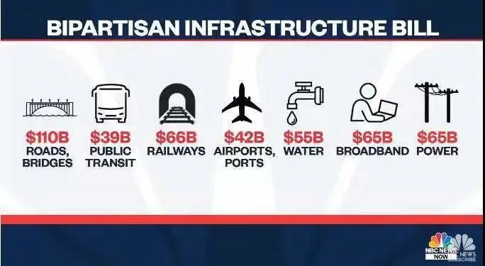

收录于合集
以下文章来源于欧亚系统科学研究会 ，作者述垚
 欧亚系统科学研究会 .
欧亚系统科学研究会 .
让系统增值，为创新添砖

作品简介
作者： 弗朗西斯·福山（Francis Fukuyama），美国作家、政治经济学者，于哈佛大学获得政治学博士学位，师从塞缪尔·P·亨廷顿。“历史终结论”的提出者。
编译： 述垚（欧亚系统科学研究会）
来源： American Purpose ；转自欧亚系统科学研究会
内容提要
近日，美国政治学家弗朗西斯·福山撰文讨论近期引起美国精英知识分子极大反响的一篇文章，该文章反应了部分宪政保守主义者和古典自由主义者的忧虑：美国国父们设计的权力制衡体制，能否经得起民粹主义力量接二连三的冲击？
福山在本文中检视了右翼民粹主义和左翼进步主义两种“非自由主义”的力量，分析何者对美国宪政秩序构成更大挑战。尽管两者都构成对“自由秩序”的威胁，但是福山认为，对美国而言，民粹右翼是更迫在眉睫的危险。 福山同意卡根的判断，即民主党人未能充分意识到这种危险，更没有凝聚足够的共识采取共同行动预防这一危险。正如某些评论者最近观察到的那样，针对基建法案、债务上限等议题，议会中的冗长辩论（fillibuster）加剧了两党僵持，而民主党人则更倾向于通过预算和解程序（budget reconcilation）而非两党协商的方式来推进政策。
美国党派内耗是历史常态，这种内耗多大程度上会累积成为质变，则需要审慎判断。欧亚系统科学研究会特编译此文，供读者思考。文章原刊于 American Purpose ，文章仅代表作者本人观点。
文章导读
《美国目的》的创建是为了捍卫古典自由主义（注：福山是《美国目的》编委会主席）。后者近年来一直受到来自右翼和左翼的同时攻击。右翼方面的威胁，来自于民粹主义- 民族主义力量，在特朗普和他的MAGA运动的操控下，这种威胁在美国显得尤为典型。左翼方面的威胁，则由不宽容的进步左翼力量构成，他们要求在许多问题上保持正统，尤其是与种族、民族、性别和性别认同相关的问题。像我们这群居于中间的人，一直在争论这些力量中的哪一种对自由秩序构成了更大的威胁。中右翼倾向的人于认为它来自觉醒的进步主义，而中左翼则将其定位在相反的极点（右翼民粹主义）。
从当前的情况来看，我认为，毫无疑问，迄今为止最大和最直接的威胁来自变得越来越专制的保守右翼。 拜登在2020年11月的大选中获胜后，美国的权力制衡机制似乎已经启动了，而特朗普将逐渐变得无关紧要。恰恰相反，威胁却以怪异和无法预测的方式出现。 卡根（Bob Kagan）撰写了一篇广受讨论的文章解释道，我们已经处于自美国内战以来最严重的宪法危机之中，而民主党人在危机面前却表现得满不在乎。 特朗普本人拒绝接受他竞选失败的事实，并且还成功地说服了绝大多数共和党人，说他是选举中重大舞弊的受害者。
卡根《我们的宪法危机已然来临》。图源：wsj
何为共和党人、为何保守派？界定这个身份的方式，已经从任何真实的政策原则转变为一个失败得不能再失败的立场：反对新冠疫苗。全国各地的共和党议员纷纷致力于改变州级投票规则，以限制民主党选民参与投票，但更重要的是，他们想赋予自身无视普选结果而决定最终选举人团名单的权力。像利兹·切尼（Liz Cheney）或亚当·金辛格（Adam Kinzinger）这样勇敢地站出来对抗特朗普的少数共和党人正被逐一清除出党。共和党人继续试图通过类似于亚利桑那州所谓的“审计”花招，取消2020 年选举的合法性。正如你可能知道的那样，审计的结果表明，拜登实际上比特朗普赢得的选票多于官方统计的数字。然而，在我们这个疯狂屋的政治世界中，前总统特朗普在佐治亚州集会向充满激情的支持者断言，黑人实际上也是白人。
卡根的判断是正确的：后院起火，民主党人还在磨洋工。 过去几周，民主党人一直在为《基础建设法案》的具体规模斗得不可开交。进步派表现得好像它赢得了与民主党在1932年或1964年所拥有的绝对多数票旗鼓相当的民众授权。他们似乎没有注意到，在他们已经通过的大规模Covid- relief计划，民主党几乎没有得到任何赞誉。他们也没意识到，通过迅速推进两党合作基础上的基础建设法案，并将其与调解程序脱钩，他们能够助拜登取得重大胜利。 保护选举进程本身应该是今天的第一要务，但这在民主党的当前议程上似乎并不重要。

今年8月，获得两党支持的一万亿基建法案中的部分支出构成。
图源：nbc
觉醒的进步左派对自由主义的威胁是真实的，但其性质却截然不同。 总的来说，左派的影响力主要表现在文化上而非政治上。受到巨大关注的事件，例如《纽约时报》记者詹姆斯·班纳特（James Bennet）或唐纳德·麦克尼尔（Donald McNeil）的被迫辞职，乃是私营企业而非国家采取的行动。我的一位保守派朋友断言，美国校园里已经没有言论自由的空间。这当然是夸大其辞：左翼的非自由主义主要局限于种族、民族、性别和性别认同等问题；在校内或校外，美国人仍然几乎可以在他们选择的任何问题上自由地批评他们的领导人。 当地学校董事会使用政治权力来贯彻进步主义的正统观念，以及执行诸如教育修正案第九条的联邦行动，但这与积极寻求颠覆下一次选举的共和党议员相比，简直是小巫见大巫。 文化力量是真正的力量：正如网飞的剧集《椅子》所暗示的那样，校园中的正统观念通常由吸收了进步思想的学生推动贯彻，他们将来掌权或者获得影响力之后仍会持续发挥作用。但这并不是标志着美国宪法秩序将在下次选举中消亡的一盏警示灯。
然而，右派和左派两种形式的非自由主义确实相互影响。 有大量共和党选民——足以决定摇摆州的选举——他们不是MAGA全心全意的支持者，但他们比右翼更不喜欢和畏惧左翼进步主义，出于这个理由，他们将投票反对民主党。因此，极端主义在两翼都得到加强。如认为所谓的科学客观性是精英统治的外衣，以及国家就是精英的阴谋，这类左翼盛行的观念已逐渐转移到民粹主义右翼。
我们这些想要捍卫自由秩序的人可以辩论卡根的文章，并争论美国体制到底受到了多大规模的威胁。 但这种类型的辩论不同于我们惯常进行的普通的政策讨论——比如（基建法案）和解的方案应该是1.5万亿美元还是3.5万亿美元。即使我们认为威胁程度有些被夸大了，但其中的利害关系到美国宪法秩序本身，以及全球自由民主的未来——鉴于美国在这项事业上的重要地位。我们需要在未来数周和数月内全力以赴地动员起来并专心致志应对，才能守卫好美国宪政。
排版 | 刘吉文
本文来源于欧亚系统科学研究会公众号
文章观点不代表本平台观点